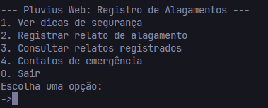

Pluvius Web
O sistema Pluvius Web foi desenvolvido usando apenas Python para o back-end e HTML/CSS para a apresentação visual.
Não usamos bibliotecas externas nem APIs. Todas as funcionalidades rodam localmente, com foco em acessibilidade e simplicidade.
No terminal, é possível acessar dicas de segurança, registrar relatos e consultar contatos de emergência. No site, apresentamos essas ideias de forma clara.
Todo o código foi feito com foco em boas práticas, validação de dados e organização lógica.